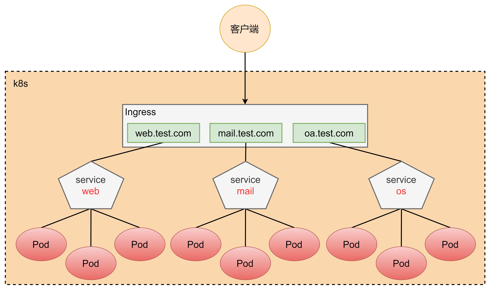
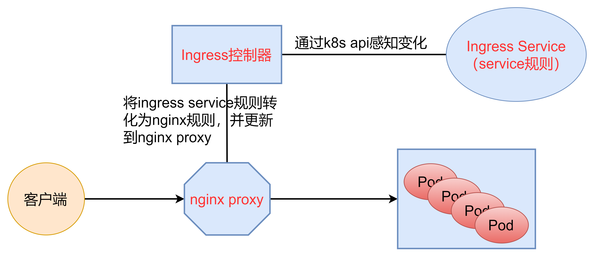
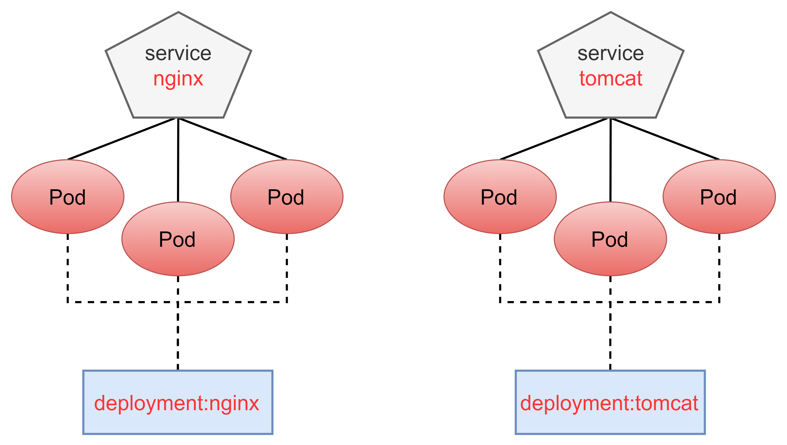
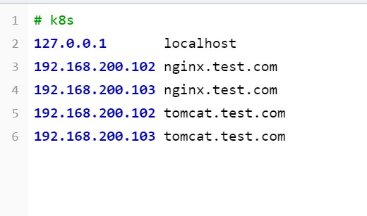
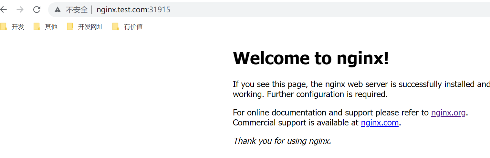
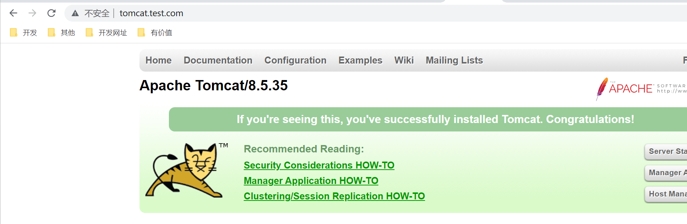
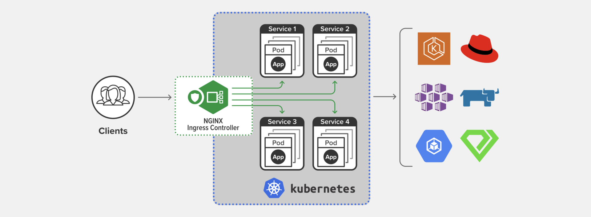
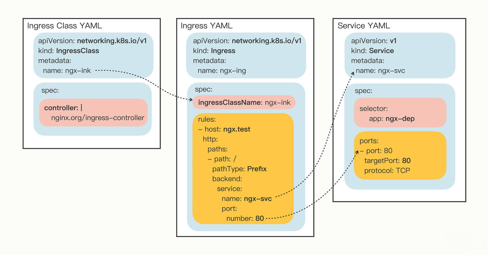

Ingress
Service很有用，但也只能说是“基础设施”，它对网络流量的管理方案还是太简单，离复杂的现代应用架构需求还有很大的差距。
Service本质上就是一个由kube-proxy控制的四层负载均衡，在TCP/IP协议栈上转发流量。Service对集群外暴露服务的主要方式有两种：NodePort和LoadBalancer，但是这两种方式，都有一定的缺点：
- NodePort方式的缺点是会占用很多集群机器的端口，那么当集群服务变多的时候，这个缺点就愈发明显
- LB方式的缺点是每个service需要一个LB，浪费、麻烦，并且需要k8s之外设备的支持
基于这种现状，k8s提供了Ingress资源对象。工作机制大致如下图所示：

实际上，Ingress相当于一个7层的负载均衡器，是 K8s对反向代理的一个抽象，它的工作原理类似于Nginx，可以理解成在Ingress里建立诸多映射规则，Ingress Controller通过监听这些配置规则并转化成Nginx的配置，然后对外部提供服务。在这里有两个核心概念：
- ingress：K8s中的一个对象，作用是定义请求如何转发到service的规则
- ingress controller：具体实现反向代理及负载均衡的程序，对ingress定义的规则进行解析，根据配置的规则来实现请求转发，实现方式有很多，比如nginx，contour，haproxy等等。
Ingress（以nginx为例）的工作原理如下：
- 用户编写ingress规则，说明哪个域名对应k8s集群中的哪个service
- ingress控制器动态感知ingress服务规则的变化，然后生成一段对应的nginx配置
- ingress控制器会将生成的nginx配置写入到一个运行着的nginx服务中，并动态更新
- 到此为止，其实真正在工作的就是一个nginx了，内部配置了用户定义的请求转发规则

生产环境下部署 Ingress-Nginx
通常，在生产环境下，我们会使用云厂商直接提供的 Kubernetes 集群和部署生产版本的 Ingress-Nginx。要部署生产版本的 Ingress-Nginx 可以使用下面的命令。
$ kubectl apply -f https://raw.githubusercontent.com/kubernetes/ingress-nginx/controller-v1.3.1/deploy/static/provider/cloud/deploy.yaml
部署完成后，你可以通过 kubectl get svc 来获取 Ingress-Nginx 的外网 IP 地址。注意，需要指定 ingress-nginx 命名空间。
$ kubectl get svc -n ingress-nginx
NAME TYPE CLUSTER-IP EXTERNAL-IP PORT(S) AGE
ingress-nginx-controller LoadBalancer 10.96.146.9 18.176.38.12 80:32192/TCP,443:30400/TCP 13m
其中，EXTERNAL-IP 就是 Ingress-Nginx 的外网 IP 地址，这个 IP 也就是业务系统的唯一入口，我们可以将它配置到 DNS 域名解析的记录中，这样用户就可以通过域名的方式来访问业务应用了。
在多数实际项目中，Ingress 都是服务暴露的最佳实践。
准备 Service和 Pod
创建下图所示的模型

创建 Nginx 和 Tomcat 的yaml
apiVersion: apps/v1
kind: Deployment
metadata:
name: nginx-deployment
namespace: dev
spec:
replicas: 3
selector:
matchLabels:
app: nginx-pod
template:
metadata:
labels:
app: nginx-pod
spec:
containers:
- name: nginx
image: nginx:1.17.1
ports:
- containerPort: 80
---
apiVersion: apps/v1
kind: Deployment
metadata:
name: tomcat-deployment
namespace: dev
spec:
replicas: 3
selector:
matchLabels:
app: tomcat-pod
template:
metadata:
labels:
app: tomcat-pod
spec:
containers:
- name: tomcat
image: tomcat:8.5-jre10-slim
ports:
- containerPort: 8080
---
apiVersion: v1
kind: Service
metadata:
name: nginx-service
namespace: dev
spec:
selector:
app: nginx-pod
clusterIP: None
type: ClusterIP
ports:
- port: 80
targetPort: 80
---
apiVersion: v1
kind: Service
metadata:
name: tomcat-service
namespace: dev
spec:
selector:
app: tomcat-pod
clusterIP: None
type: ClusterIP
ports:
- port: 8080
targetPort: 8080
[root@master service]# kubectl create -f deployment.yaml
deployment.apps/nginx-deployment created
deployment.apps/tomcat-deployment created
service/nginx-service created
service/tomcat-service created
[root@master service]# kubectl get svc -n dev
NAME TYPE CLUSTER-IP EXTERNAL-IP PORT(S) AGE
nginx-service ClusterIP None <none> 80/TCP 50s
tomcat-service ClusterIP None <none> 8080/TCP 50s
创建 Ingress
创建ingress-http.yaml
apiVersion: networking.k8s.io/v1
kind: Ingress
metadata:
name: ingress-http
namespace: dev
spec:
ingressClassName: nginx
rules:
- host: nginx.test.com
http:
paths:
- path: /
pathType: Prefix
backend:
service:
name: nginx-service
port:
number: 80
- host: tomcat.test.com
http:
paths:
- path: /
pathType: Prefix
backend:
service:
name: tomcat-service
port:
number: 8080
Ingress 指定的 Service 端口号其实就是 Service 对象的 Port 字段
[root@master service]# kubectl create -f ingress-http.yaml
ingress.networking.k8s.io/ingress-http created
[root@master service]# kubectl get ing ingress-http -n dev
NAME CLASS HOSTS ADDRESS PORTS AGE
ingress-http nginx nginx.test.com,tomcat.test.com 80 22s
[root@master service]# kubectl describe ing ingress-http -n dev
Name: ingress-http
Labels: <none>
Namespace: dev
Address:
Default backend: default-http-backend:80 (<error: endpoints "default-http-backend" not found>)
Rules:
Host Path Backends
---- ---- --------
nginx.test.com
/ nginx-service:80 (10.244.1.120:80,10.244.1.121:80,10.244.1.129:80 + 3 more...)
tomcat.test.com
/ tomcat-service:8080 (10.244.1.127:8080,10.244.1.128:8080,10.244.2.49:8080)
Annotations: <none>
Events:
Type Reason Age From Message
---- ------ ---- ---- -------
Normal Sync 29s nginx-ingress-controller Scheduled for sync
Normal Sync 29s nginx-ingress-controller Scheduled for sync
修改本机的hosts文件
node虚拟机的IP地址 nginx.test.com
node虚拟机的IP地址 tomcat.test.com

查看ingress为service提供的端口号
[root@master service]# kubectl get svc -n ingress-nginx
NAME TYPE CLUSTER-IP EXTERNAL-IP PORT(S) AGE
ingress-nginx-controller LoadBalancer 10.96.49.11 <pending> 80:31915/TCP,443:30664/TCP 38m
ingress-nginx-controller-admission ClusterIP 10.96.201.100 <none> 443/TCP 38m


为什么要有Ingress Controller
Ingress可以说是在七层上另一种形式的Service，它同样会代理一些后端的Pod，也有一些路由规则来定义流量应该如何分配、转发，只不过这些规则都使用的是HTTP/HTTPS协议。
你应该知道，Service本身是没有服务能力的，它只是一些iptables规则， **真正配置、应用这些规则的实际上是节点里的kube-proxy组件**。如果没有kube-proxy，Service定义得再完善也没有用。
同样的，Ingress也只是一些HTTP路由规则的集合，相当于一份静态的描述文件，真正要把这些规则在集群里实施运行，还需要有另外一个东西，这就是 Ingress Controller，它的作用就相当于Service的kube-proxy，能够读取、应用Ingress规则，处理、调度流量。
按理来说，Kubernetes应该把Ingress Controller内置实现，作为基础设施的一部分，就像kube-proxy一样。
不过Ingress Controller要做的事情太多，与上层业务联系太密切，所以Kubernetes把Ingress Controller的实现交给了社区，任何人都可以开发Ingress Controller，只要遵守Ingress规则就好。
这就造成了Ingress Controller“百花齐放”的盛况。
由于Ingress Controller把守了集群流量的关键入口，掌握了它就拥有了控制集群应用的“话语权”，所以众多公司纷纷入场，精心打造自己的Ingress Controller，意图在Kubernetes流量进出管理这个领域占有一席之地。
这些实现中最著名的，就是老牌的反向代理和负载均衡软件Nginx了。从Ingress Controller的描述上我们也可以看到，HTTP层面的流量管理、安全控制等功能其实就是经典的反向代理，而Nginx则是其中稳定性最好、性能最高的产品，所以它也理所当然成为了Kubernetes里应用得最广泛的Ingress Controller。
不过，因为Nginx是开源的，谁都可以基于源码做二次开发，所以它又有很多的变种，比如社区的Kubernetes Ingress Controller（ https://github.com/kubernetes/ingress-nginx）、Nginx公司自己的Nginx Ingress Controller（ https://github.com/nginxinc/kubernetes-ingress）、还有基于OpenResty的Kong Ingress Controller（ https://github.com/Kong/kubernetes-ingress-controller）等等。
根据Docker Hub上的统计， **Nginx公司的开发实现是下载量最多的Ingress Controller**，所以我将以它为例，讲解Ingress和Ingress Controller的用法。
下面的 这张图 就来自Nginx官网，比较清楚地展示了Ingress Controller在Kubernetes集群里的地位：

为什么要有IngressClass
那么到现在，有了Ingress和Ingress Controller，我们是不是就可以完美地管理集群的进出流量了呢？
最初Kubernetes也是这么想的，一个集群里有一个Ingress Controller，再给它配上许多不同的Ingress规则，应该就可以解决请求的路由和分发问题了。
但随着Ingress在实践中的大量应用，很多用户发现这种用法会带来一些问题，比如：
- 由于某些原因，项目组需要引入不同的Ingress Controller，但Kubernetes不允许这样做；
- Ingress规则太多，都交给一个Ingress Controller处理会让它不堪重负；
- 多个Ingress对象没有很好的逻辑分组方式，管理和维护成本很高；
- 集群里有不同的租户，他们对Ingress的需求差异很大甚至有冲突，无法部署在同一个Ingress Controller上。
所以，Kubernetes就又提出了一个 Ingress Class 的概念，让它插在Ingress和Ingress Controller中间，作为流量规则和控制器的协调人，解除了Ingress和Ingress Controller的强绑定关系。
现在， **Kubernetes用户可以转向管理Ingress Class，用它来定义不同的业务逻辑分组，简化Ingress规则的复杂度**。比如说，我们可以用Class A处理博客流量、Class B处理短视频流量、Class C处理购物流量。
这些Ingress和Ingress Controller彼此独立，不会发生冲突，所以上面的那些问题也就随着Ingress Class的引入迎刃而解了。
如何使用YAML描述Ingress/Ingress Class
我们花了比较多的篇幅学习Ingress、 Ingress Controller、Ingress Class这三个对象，全是理论，你可能觉得学得有点累。但这也是没办法的事情，毕竟现实的业务就是这么复杂，而且这个设计架构也是社区经过长期讨论后达成的一致结论，是我们目前能获得的最佳解决方案。
好，了解了这三个概念之后，我们就可以来看看如何为它们编写YAML描述文件了。
和之前学习Deployment、Service对象一样，首先应当用命令 kubectl api-resources 查看它们的基本信息，输出列在这里了：
kubectl api-resources
NAME SHORTNAMES APIVERSION NAMESPACED KIND
ingresses ing networking.k8s.io/v1 true Ingress
ingressclasses networking.k8s.io/v1 false IngressClass
你可以看到，Ingress和Ingress Class的apiVersion都是 networking.k8s.io/v1， 而且Ingress有一个简写 “ing”，但Ingress Controller怎么找不到呢？
这是因为Ingress Controller和其他两个对象不太一样，它不只是描述文件，是一个要实际干活、处理流量的应用程序，而应用程序在Kubernetes里早就有对象来管理了，那就是Deployment和DaemonSet，所以我们只需要再学习Ingress和Ingress Class的的用法就可以了。
有了Ingress对象，那么与它关联的Ingress Class是什么样的呢？
其实Ingress Class本身并没有什么实际的功能，只是起到联系Ingress和Ingress Controller的作用，所以它的定义非常简单，在“ **spec**”里只有一个必需的字段“ **controller**”，表示要使用哪个Ingress Controller，具体的名字就要看实现文档了。
比如，如果我要用Nginx开发的Ingress Controller，那么就要用名字“ **nginx.org/ingress-controller**”：
apiVersion: networking.k8s.io/v1
kind: IngressClass
metadata:
name: ngx-ink
spec:
controller: nginx.org/ingress-controller
Ingress和Service、Ingress Class的关系我也画成了一张图，方便你参考：
